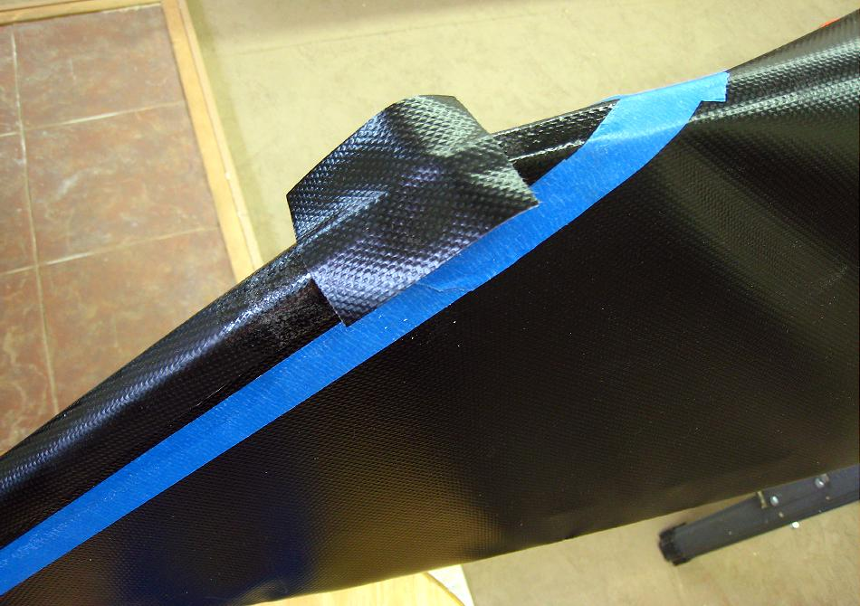

PVC Skinning (Stems)
Menu
Previous Page
Next Page

Cut a small patch to cover the overlap area. Apply glue to both sections, allow to dry , position in place, and apply heat and pressure to seal this area.